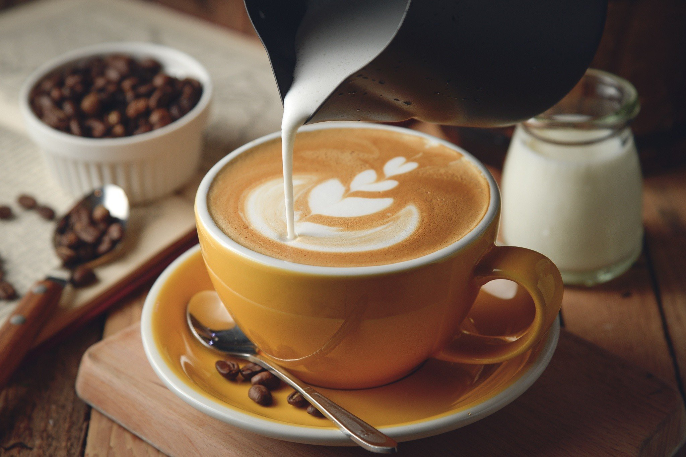
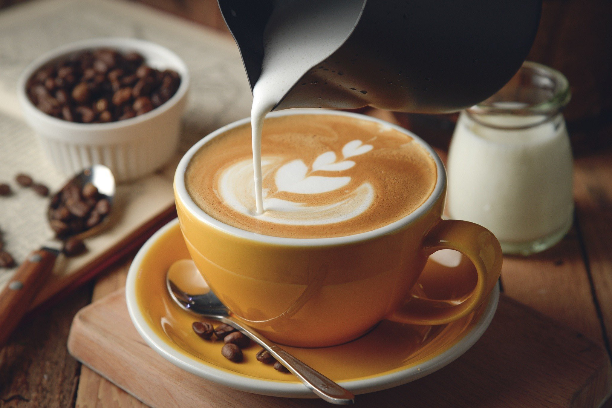

Какое вы кофе пьете?
Какое вы кофе пьете?
Пить или не пить кофе? Для миллионов людей по всему миру так
вопрос не стоит. Только в США и только за 2017 год было
продано 3,4 миллиарда фунтов кофе. Но многие ценители этого
напитка отказываются от него опасаясь возможного вреда:
повышения давления, сердцебиения
Обоснованы ли эти опасения. Разложим вопрос по полочкам.
Распространенность этого заболевания в последние годы
повысилась в 10 раз! С этим диагнозом живут около 300 млн
людей во всем мире. Интересно, что кофе с кофеином снижает
риск сахарного диабета 2 типа. И чем больше кофеина
содержится в напитке, тем ниже риск.
Однако, влияние напитка различается у разных групп людей. Например, у североамериканцев употребление 6 и более чашек кофе снижает риск диабета у мужчин на 54%, и на 29% у женщин. У европейцев риск в большей степени снижался у женщин (61%), чем у мужчин (30%). А вот у декофеинизированного кофе таких свойств не наблюдалось.
 
